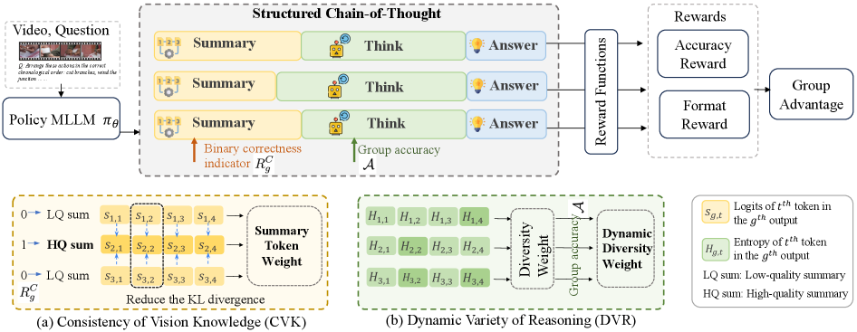
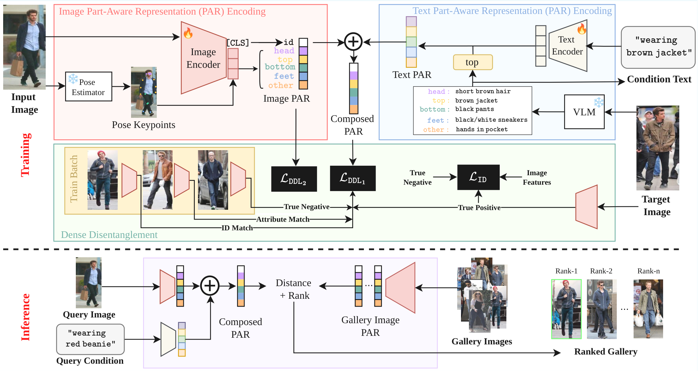

I'm a Senior Engineering Manager at Google Cloud AI in Silicon Valley. I'm working on eval, quality and fine-tuning for GenAI Media models in the Gemini model family, inlcuding Nano Banana, Veo, and Omni.
From 2017 to 2025, I was holding various roles at Amazon. I was a Senior Applied Science Manager at Ring AI. I built and scaled a 50-person AI org across the U.S., Europe, and Asia. I drove the AI strategies for Amazon Ring, Blink, and Echo devices. I was a Principal Scientist at the Amazon Consumer Robotics org where I led the visual perception for Amazon's flagship consumer robot Astro. I also spent a short time working on improving ads retrieval algorithms & systems using LLMs for Amazon Sponsored Products ads.
Prior to Amazon, I was a Senior Researcher at Microsoft AI & Research in Redmond, working on real-time spatial CV/ML algorithms and systems. Part of what I built was showcased in Satya Nadella's Build 2017 keynote. I also worked as a Research Scientist at GE Global Research, delivering computer vision solutions for industrial automated inspections.
I received my Ph.D. in Computer Science from the University of North Carolina at Charlotte. I hold an M.S. from Fudan University and a B.S. from Sun Yat-sen University, both in in Computer Science.
Experience |
| 2025 - Present |
Generative AI Lead, Cloud AI, Google
Leading evaluations, quality, and fine-tuning services for Google's Generative Media models such as Veo, Nano Banana, and Gemini Omni. |
| 2021 - 2025 |
Senior Manager, Applied Science, Amazon
Built and scaled a 50+ person science and engineering organization. Drove AI strategy and agenda for Ring, Blink, and Echo devices. |
| 2017 - 2021 |
Principal Scientist, Amazon
Tech Lead for Amazon Consumer Robotic org. Leading the visual visual perception sensors, algorithms and systems for Amazon Astro. |
| 2016 - 2017 |
Senior Researcher, Microsoft AI & Research
Developed spatial industrial computer vision models and systems in Microsoft AI & Research at Redmond, showcased live in Satya Nadella's Build 2017 conference keynote. |
| 2014 - 2016 |
Research Scientist, GE Global Research
Created automated inspection algorithms and systems for Aviation, Energy and Transportation business lines, receiving the GE Customer Focus Award. |
ResearchMy primary research interests are in computer vision, video understanding, representation learning, and generative media. |
|
 |
Reinforcing Structured Chain-of-Thought for Video
Understanding
Peiyao Wang, Haotian Xu, Noranart Vesdapunt, Rui Hou, Jingyi Zhang, Haibin Ling, Oleksandr Obiednikov, Ning Zhou, Kah Kuen Fu IEEE/CVF Conference on Computer Vision and Pattern Recognition (CVPR), 2026 arXiv Introducing Summary-Driven Reinforcement Learning (SDRL), a new single-stage RL framework that obviates the need for SFT by utilizing a Structured CoT format: Summarize - Think - Answer. |

|
Dynamics Language-Based
Representation for Inferring Rigid-Body
Dynamics From Videos
Chia-Hsiang Kao, Cong Phuoc Huynh, Chien-Yi Wang, Noranart Vesdapunt, Stefan Stojanov, Bharath Hariharan, Oleksandr Obiednikov, Ning Zhou IEEE/CVF Conference on Computer Vision and Pattern Recognition (CVPR), 2026 project page / arXiv Exploring a dynamics-aware language alignment model to infer rigid-body physical behaviors directly from raw pixels, preserving visual consistency in generative videos. |
|
 |
Composite-Attribute Person
Re-Identification via Pose-Guided
Disentanglement
Kartik Patwari, Noranart Vesdapunt, Chien-Yi Wang, Dawei Li, Cong Phuoc Huynh, Ning Zhou, Chen-Nee Chuah, Kah Kuen Fu IEEE/CVF Conference on Computer Vision and Pattern Recognition (CVPR), 2026 project page / arXiv Proposes pose-guided attribute disentanglement to isolate structural person features from varying viewpoints, setting state-of-the-art benchmarks in re-identification. |
Awards○ 2018, 2019: Winner, Low-Power Image Recognition Challenge (LPIRC) ○ 2017: Outstanding Patent Award, Microsoft ○ 2015: Customer Focus Award, GE Global Research |
|
© 2026 Ning Zhou. All rights reserved.
Adapted from the classic design of jonbarron.info. |